Espejos.
A la hora de diseñar un cuarto de baño, el espejo es un elemento importante a tener en cuenta, ya que gracias a al modelo que elijas, además de cuestiones relacionadas con la funcionalidad, puedes conseguir diferentes profundidades y amplitud de espacio dándole un acabado final a tus proyectos y espacios.
Nuestra amplia selección de espejos iluminados, espejos con luz perimetral, con luz frontal, espejos con iluminación integrada, con televisión, espejos de aumento, retro iluminados, a medida, anti-vaho, etc. te permitirá encontrar aquel que necesites
Ven a vernos a nuestra tienda de Gran Vía 494, en Barcelona, o mira las imágenes y novedades de espejos de baños que compartimos en nuestras redes sociales. Si sigues leyendo verás alguna de ellas.
Marcas en el showroom
- Cosmic
- Windisch
- Lineabeta
- Koh-I-Noor
- Inda Bathroom
- Duravit
Y si lo que buscas no está en exposición, lo buscamos en la Bagnoteca.
Novedades 202618

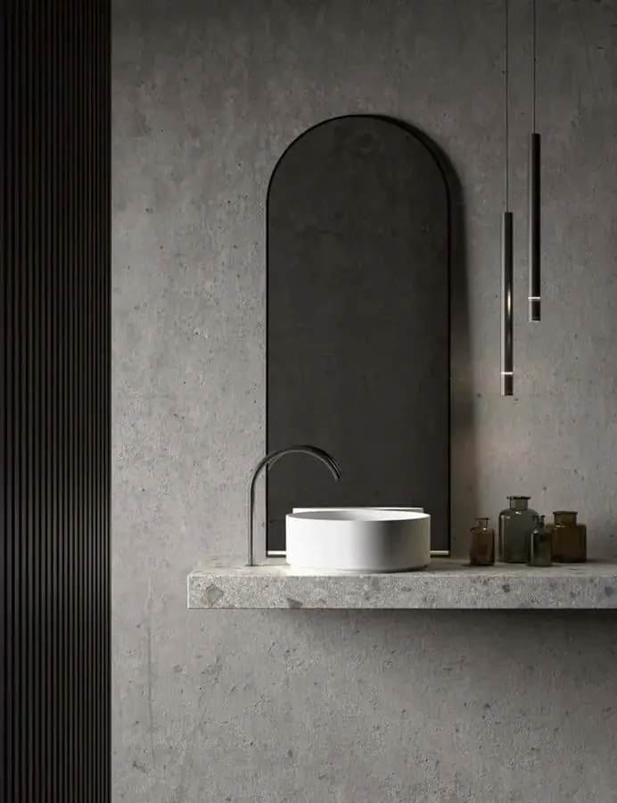
EspejosEspejos de baño & Camerinos – Madero Atelier
Los espejos en el baño son mucho más que un complemento funcional: son piezas clave en el diseño del espacio y la experiencia diaria. A menudo subestimados, su presencia influye en la percepción de amplitud y en nuestros rituales cotidianos. Desde ese último vistazo antes de salir hasta la sensación de amplitud que generan en la estancia.
Madero Atelier redefine su importancia con diseños que combinan estética y practicidad, aportando carácter al baño con propuestas que se integran armoniosamente en cualquier ambiente.

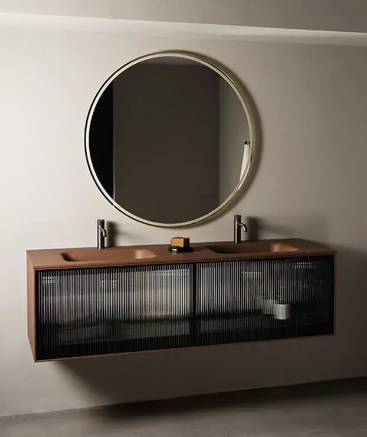
EspejosEspejo reflectivo para baños Heritage – Inbani
Inbani sorprende nuevamente al incorporar a su colección HERITATGE la máxima innovación en espejos para baños. Fieles a la estética de la colección, inspirada en la belleza de la arquitectura griega, estos espejos mantienen formas minimalistas y sutiles.
Una característica distintiva es el halo de luz LED integrado, que al encenderse ilumina tanto el interior del espejo como su entorno. Este detalle no solo mejora la funcionalidad de cualquier baño, sino que también permite su instalación en vestidores y vitrinas, añadiendo un toque de sofisticación y practicidad a cualquier estancia.

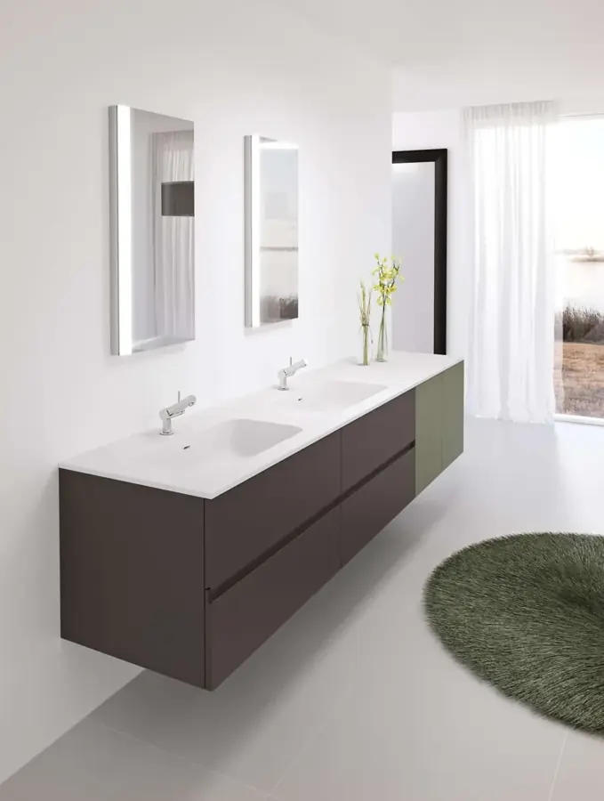
EspejosEspejos antivaho y anticorrosión para baños - Cosmic
La colección Basic es la esencia del reflejo, con formas simples, disponibles en diferentes medidas para adaptarse a cualquier entorno.
Su sencillez ofrece máxima funcionalidad con líneas puras y puras. Con una garantía de 10 años, y características antivaho y anticorrosión, estos espejos durarán en el tiempo.
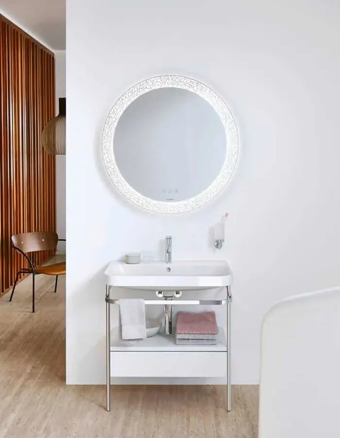
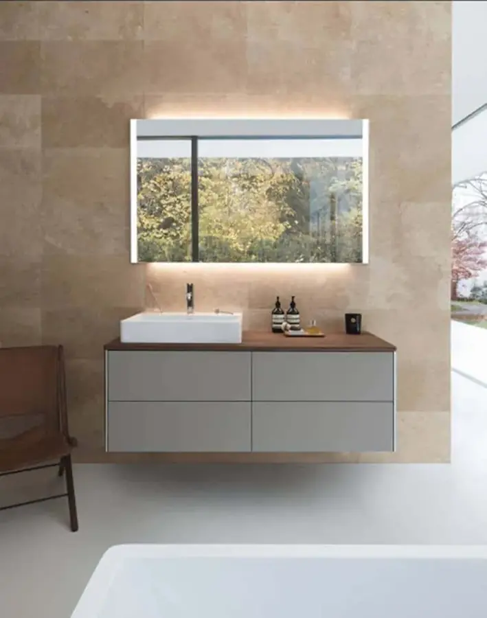
EspejosEspejos para baños - Duravit
Los espejos Duravit llevan la comodidad en el ADN de su diseño.
Inteligencia y calidad se ponen al servicio del espacio de baño a través de la incorporación de calefacción antivaho, iluminación óptima, control inteligente por smartphone, etc.
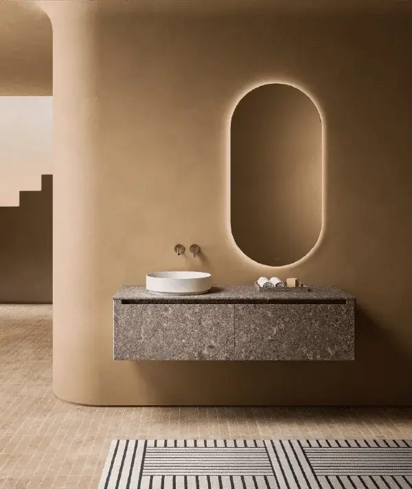
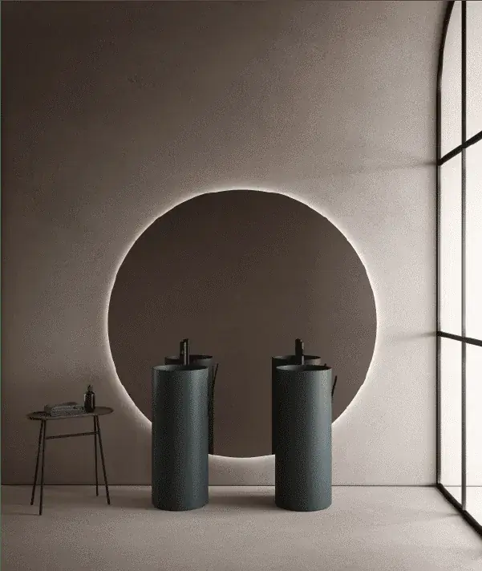
EspejosEspejos para baños Mirrors – Inbani
Los espejos suelen ser uno de los elementos con más protagonismo y personalidad del baño.
Inbani es totalmente capaz de crear piezas únicas para cualquier tipo de espacio de baño, independientemente de su estilo y de sus dimensiones.
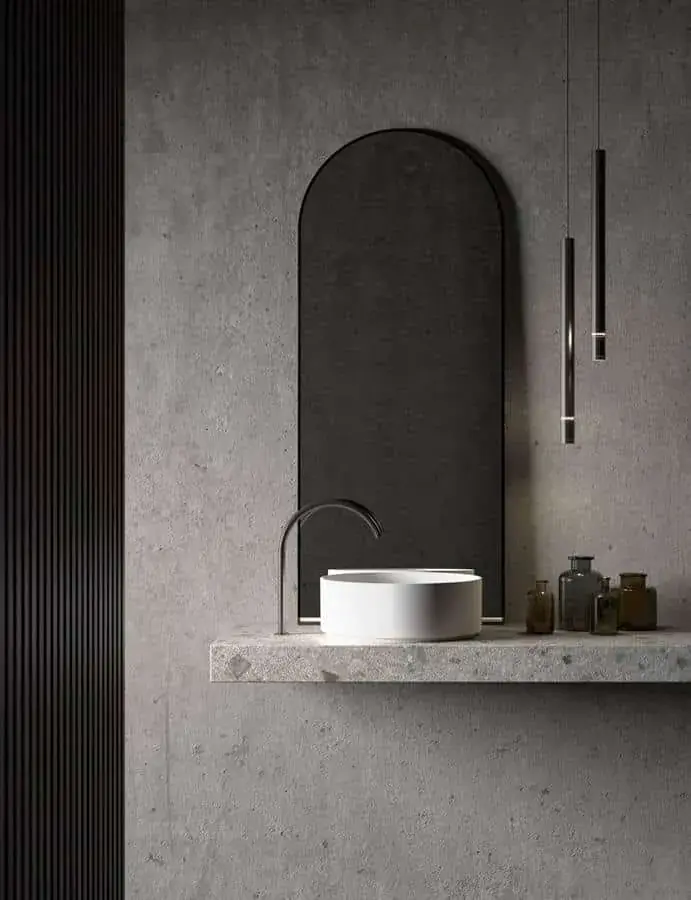
EspejosEspejo para baño Arco – Madero Atelier
El espejo Arco consigue que la decoración de tu baño se salga de la normalidad, y destaque por la elegancia y la sofisticación que suelen poseer este tipo de diseños top.
La firma de referencia MADERO ATELIER nos presenta este espejo de baño de 50 cm x 120 cm x 5mm, muy recomendable para lavabo sobre encimera.
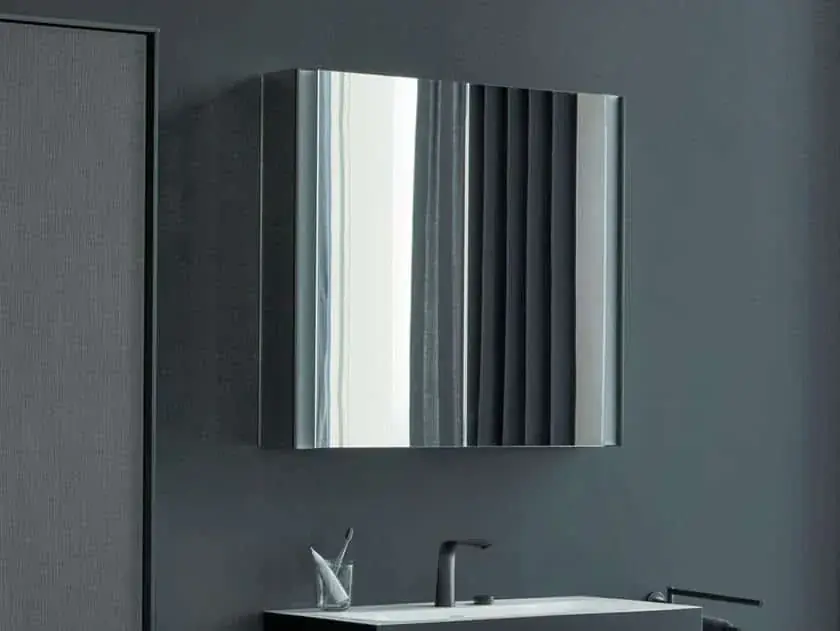
EspejosEspejo de baño Xviu – Duravit
Duravit en su nueva colección para el baño XViu también nos propone un espejo lleno de prestaciones (individual o acoplado al mueble de baño de la misma colección):
· Control de iluminación
· Calefacción anti vaho
· Varias tonalidades de color
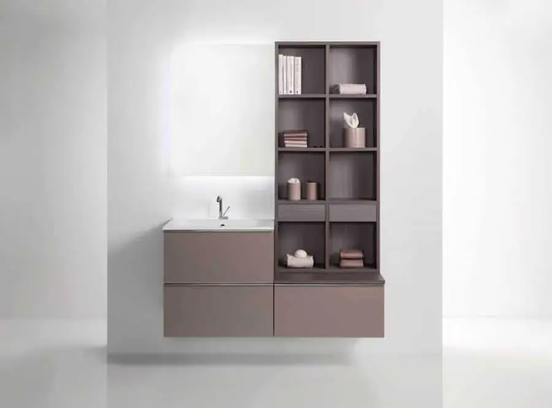
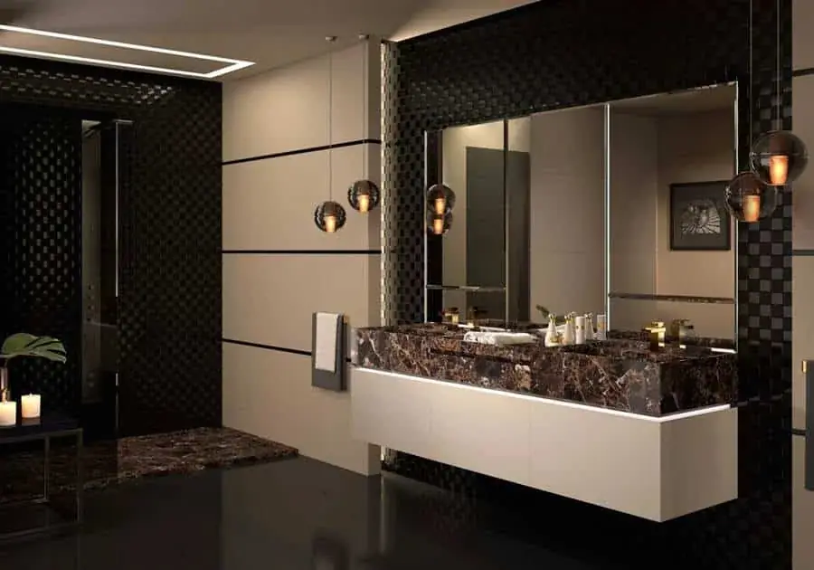
EspejosEspejos para cuartos de baño – Madero Atelier
Sabiendo que el espejo de cualquier baño es un elemento indispensable tanto estética como funcionalmente, los gallegos de Madero Atelier nos presentan su nueva colección.
Los tienes de todo tipo y tamaños, con un sinfín de funcionalidades adicionales.
Una colección lo suficientemente amplia para satisfacer casi cualquier preferencia estética.
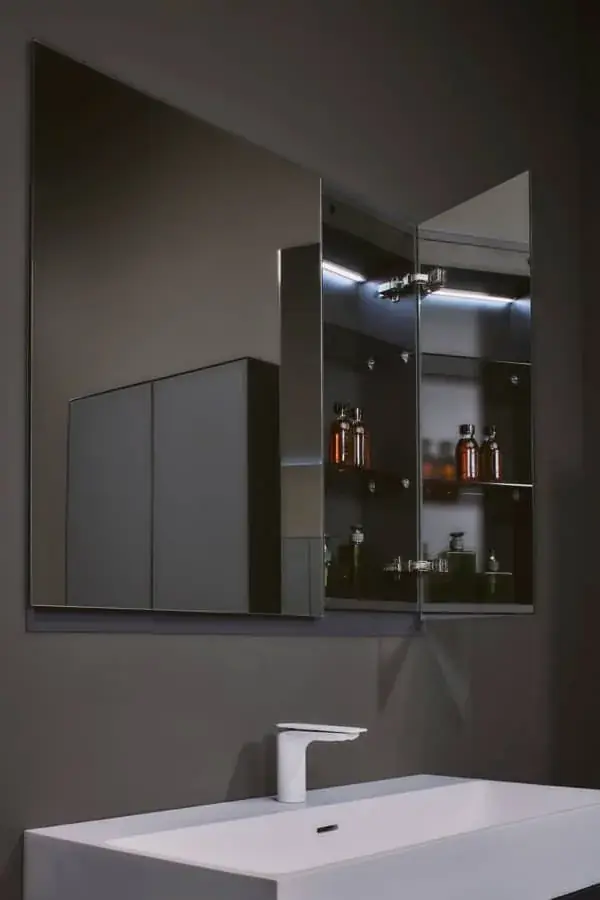
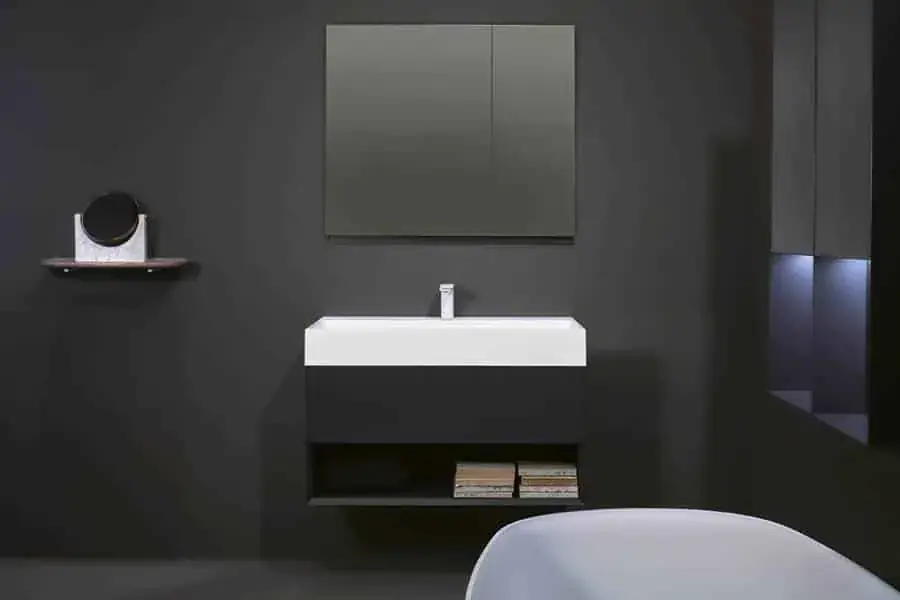
EspejosEspejos camerino de baños Strato y Origin - Inbani
El desarrollo de propuestas adaptadas no solo a la estética sino al tamaño de los baños, es una tendencia que se renueva y mejora constantemente.
Baños y aseos pequeños, o los de cortesía, precisan de soluciones óptimas en cuanto a sus posibilidades de uso, que se adapten a tamaños, se integren con armonía, y cuya instalación sea sencilla.
La firma española Inbani, presenta sus espejos camerino para baños Strato y Origin, dos soluciones integrales, inteligentemente conceptualizadas, con amplio abanico de posibilidades en cuanto a tamaños, que tienen muy presente las necesidades de los baños de menores dimensiones.
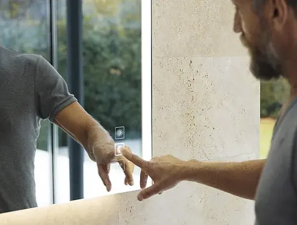
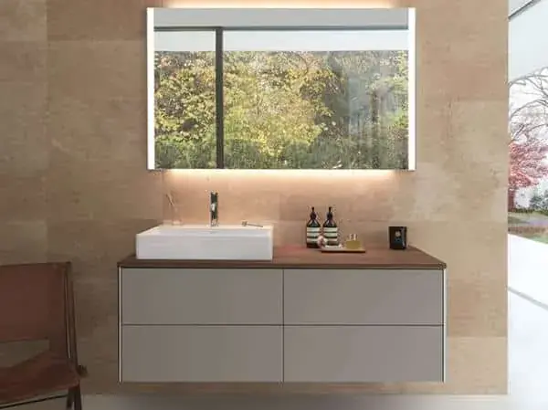
EspejosEspejo iluminado para baños XSquare – Duravit
¿Quién dijo que un espejo no podía tener memoria?
A los alemanes de Duravit les gusta convertir un reto complicado en una solución sencilla y sorprendente.
De nuevo lo vuelven a demostrar con el espejo de baño XSquare, que al margen de su diseño bien solucionado, destaca por la cantidad de prestaciones que nos ofrece:
Y todo ello de la mano de una memoria que te evitará pensar a ti.
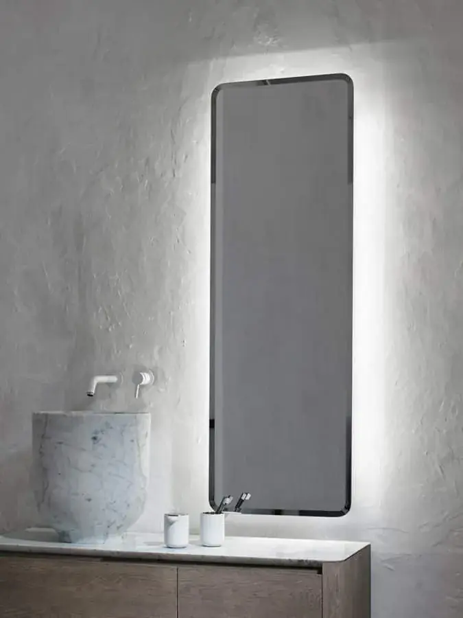
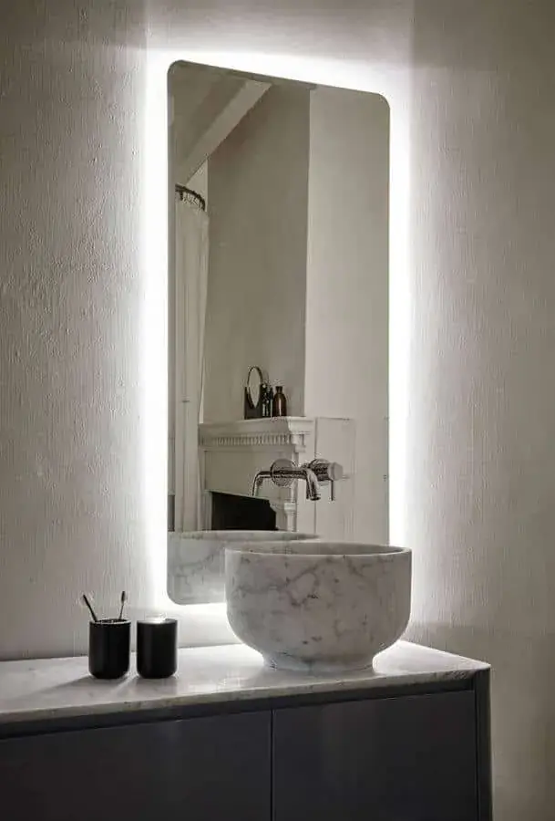
EspejosEspejos para baños Origin - Inbani
Elegancia, diseño, y solemnidad, son algunas palabras con las que perfectamente describimos Origin, los nuevos espejos para baños de la firma española Inbani.
Una silueta muy lograda, junto con la perfecta integración artesanal de varios materiales (la madera, el cristal y el metal), son elementos destacables de estos espejos recientemente lanzados al mercado.
Diseñados por Seung-Yong Song, los espejos de baño Origin, son óptimos para aquellos que además de mirarse, quieran contemplar una pieza cuasi escultórica en su cuarto de baño.
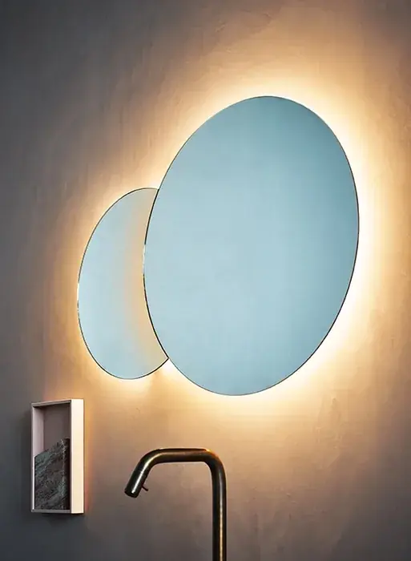
EspejosEspejo para baño Eclissi - Agape
En este sector, existen varias marcas cuyos espejos para baño merecen una mención especial. Este el caso del nuevo espejo de baño Eclissi de la marca Agape, un impecable diseño ejecutado por Gergely Àgoston en asociación con RD Agape.
Eclissi está compuesto por dos espejos, así como por dos superficies de lectura, que además te ofrecen la opción de poderlas combinar de varias formas para personalizar la que prefieras.
Sus dos profundidades y la existencia de dos diámetros, facilitan la interacción con el espejo cuando de lo que hablamos es de proximidad, profundidad, y posiciones relativas.
Además, los contornos borrosos de los círculos de luz de este espejo para baños de Agape, generan importantes contrastes con el patrón geométrico simple de sus superficies reflectantes.
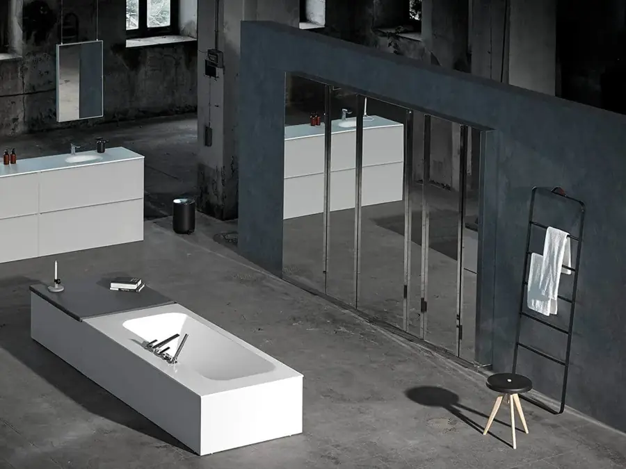
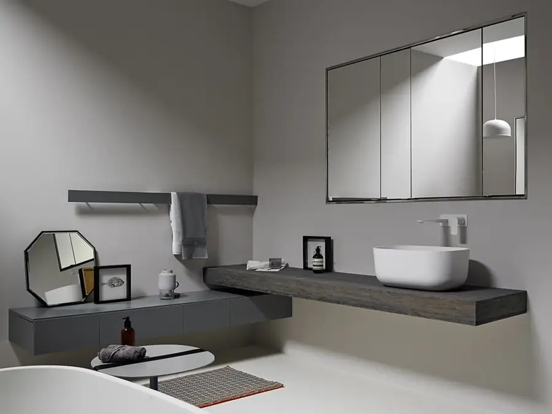
EspejosEspejos camerinos de baño KA - Inbani
La marca española especializada en mobiliario moderno para baños Inbani, nos presenta KA, una novedosa colección de espejos para baños de última generación, disponible en dos modalidades.
Por un lado dispones de la opción de Espejos Camerinos los cuales están totalmente cubiertos por espejos (tanto en su zona frontal como en los laterales); y por otro lado la opción de Espejos Empotrados, los cuales solo disponen de espejo frontal.
En los dos casos, el interior de estos espejos para baño está fabricando con DM-Hidrófugoe, e incluye una chapa de melanina Antracita, un material que te ofrece la máxima protección. Los estantes están fabricados en cristal PARSOL® Gris de 5mm.
A su vez, los espejos al suelo de esta colección, tienen una altura 206,5 cm, y en su parte inferior incorporan un zócalo de Acero Inoxidable para su protección. Las opciones de profundidad son la de 160 y el de 300 mm.
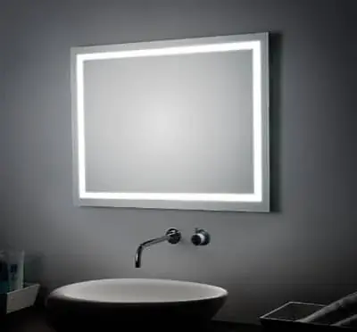
EspejosEspejos para baño - Koh i Noor
Pertenecientes a la gama de espejos de nombre Perimetrale, los nuevos espejos para baños KOH i NOOR, incorporan iluminación del tipo led (casi igual que la natural), los tienes disponibles en 12 medidas distintas (desde 80×60 a 140×80), y su diseño facilita por un lado una alta luminosidad regular por todo su perímetro sin que hayan zonas de sombra, y por otro la opción de instalación tanto en posición vertical como en horizontal.
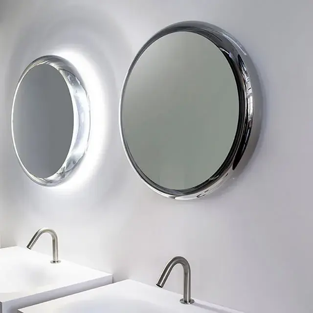
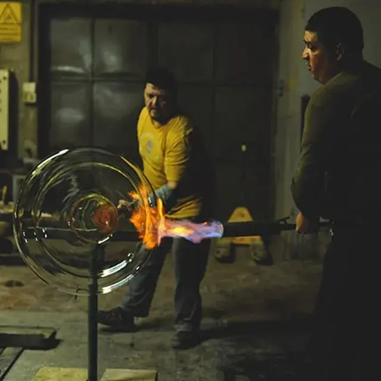
EspejosEspejo para baños Solid - Agape
A partir de una curiosa inspiración que en este caso se originó imaginando una gota de metal en una pared, nace este nuevo espejo para baños con iluminación incorporada de la italiana Agape, y diseñado por Diego Vencato y Marco Merendi.
Solid, que es así como se llama esta nueva creación de espejos para baños modernos, dispone de un espejo redondo a base de vidrio soplado, que gracias a un laborioso proceso de recubrimiento, genera una superficie reflectante y la vez permeable a la luz.
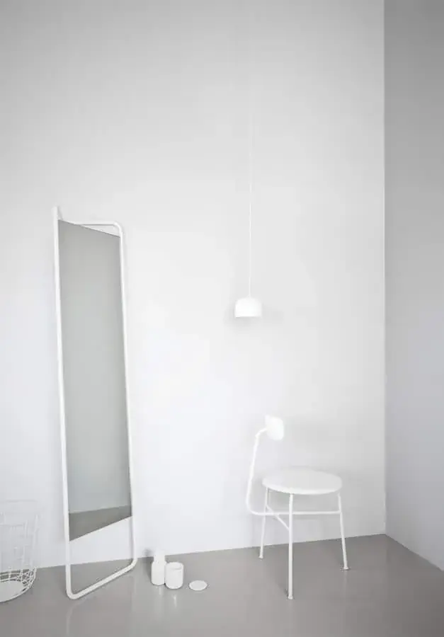
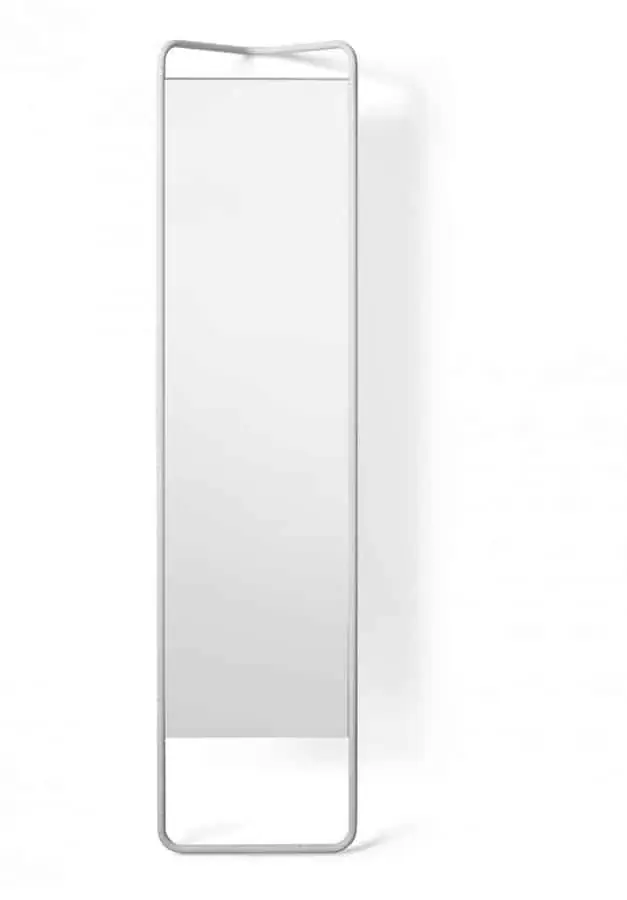
EspejosEspejos para baños Kaschkasch Mirror - Inbani
Cuando buscas un buen espejo para un baño pequeño, es probable que le exijas además de una potente expresión gráfica, una amplia variedad y diversidad de detalles funcionales y prácticos. Así es el nuevo espejo de suelo que propone la marca Inbani. Un espejo de cuerpo completo, cuya forma triangular es óptima para colocar en una esquina.
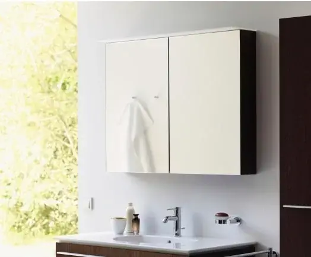
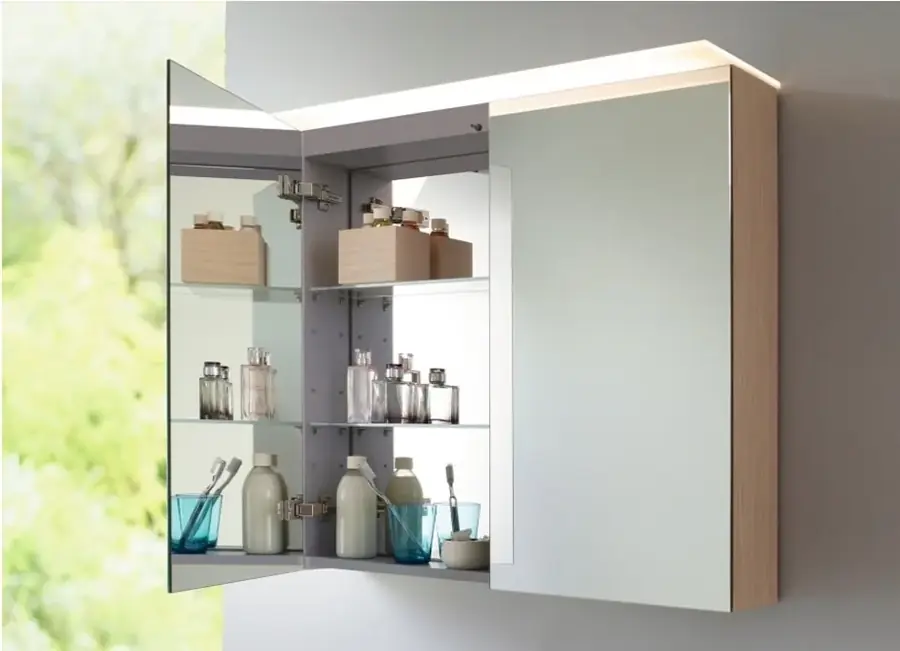
EspejosMuebles Espejo X-Large - Duarvit
Duravit ha desarrollado un sistema de sonido opcional para los muebles espejo entre ellos los de la renovada serie X-Large.
Este sistema ofrece un excelente sonido y está adaptado perfectamente a la situación del cuarto de baño. Se puede traspasar y controlar la música cómodamente a través de cualquier dispositivo que disponga de Bluetooth.
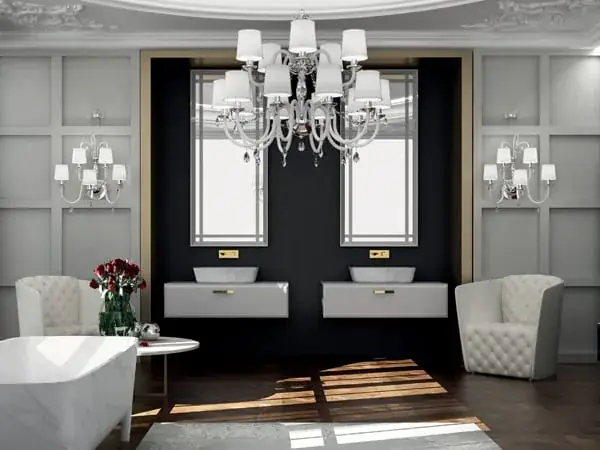
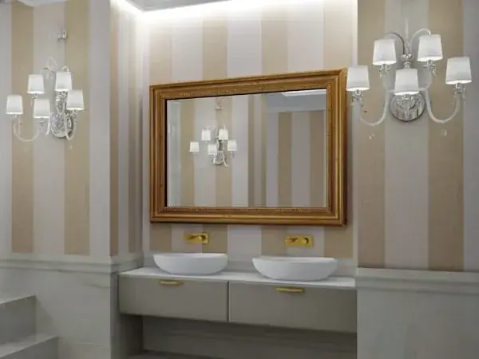
EspejosEspejos de baño Autoritratti - Teuco
Los nuevos espejos Autoritatti de TEUCO pueden tener acabados en pan de oro, así como lacado en negro y blanco. Su diseño y características, convierten a este espejo para el cuarto de baño, en un marco óptimo de clasicismo intemporal.